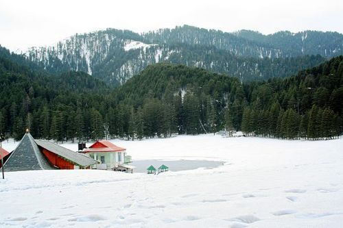
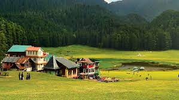
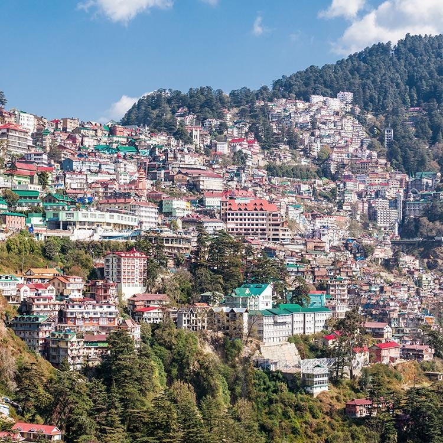
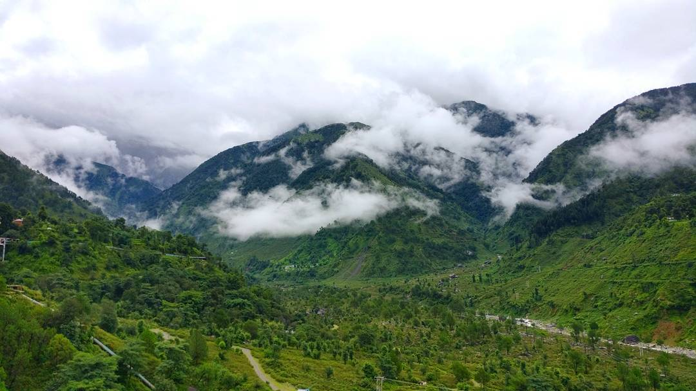
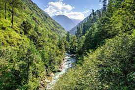

HIMACHAL PRADESH
Himachal pradesh,being situated at the foothills of himalayas has a range of snow covered peaks and beautiful
valleys.It is one of the favourite destinations for people of all age groups.
February to June is the best time to visit Himachal Pradesh since the weather is pleasant.
TOP 7 DESTINATIONS:-
1.MANALI
2.DALHOUSIE
3.KHAJJIAR
4.SHIMLA
5.KASAULI
6.PALAMPUR
7.GREAT HIMALAYAN NATIONAL PARK
MANALI

- About:
Manali is stuated in the Kullu Valley and is bordered by pine forests and Beas River.The scenic meadows,
waterfalls and valleysis an attraction for adventurers and nature lovers alike.
- Distance from Delhi: 559 km
- Top destinations in Manali:
- Solang valley
- Kothi
- Vashist Hot Water Springs
- Hadimba Devi Temple
- Beas River
- Gulaba
- Manu Temple
DALHOUSIE

- About:
Dalhousie was named after Lord Dalhousie,the British governor in the 19th century. This hill station is
spread across five hills at the foot of Dhauladhar mountain range.The place has a wide range of vegetation
including pine, oak and deodar.
- Distance from Delhi: 562 km
- Top destinations in Dalhousie:
- Kalatop Wildlife Reserve
- Dainkund Peak
- St. Francis Church
- Ganji Pahari
- Chamera Lake
KHAJJIAR

- About:
Khajjiar can be considered a tiny slice of paradise amidst the dense deodar forests, verdant meadows and
snow-capped mountains of Himalayas.It is nicknamed as the ‘Mini Switzerland of India’.
- Distance from Delhi: 590 km
- Top destinations in Khajjiar:
- Khajjiar Lake
- Kalatop Wildlife Sanctuary
- Khajji Nag Temple
SHIMLA

- About:
The town sprawls along a mountain ridge, enveloped in oak, pine and rhododendron forests. It's quite famous
for the colonial-style buildings and historic railways it has.The hill station offers spectacular views of
the Himalayan ranges.
- Distance from Delhi:346 km
- Top destinations in Shimla:
- Jakhoo Hill
- Mall Road
- Kalka–Shimla Railway
- Naldehra And Shaily Peak
- Christ Church
- Kufri
- Annandale
- The Shimla State Museum
- Solan
KASAULI

- About:
Kasauli is a colonial town located at an elevation of 1900 metres.The air is fresh and unadulterated and
gives peaceful vibes.it is a must visit place for nature lovers.
- Distance from Delhi: 291 km
- Top destinations in Kasauli:
- Christ Church
- Gilbert Nature Trail
- Manki Point
- Sunset Point
- The Mall
- Krishna Bhavan Mandir
- Shri Baba Balak Nath Temple
PALAMPUR

- About:
Palampur, Himachal Pradesh's tea growing region is situated near Dharamsala in the Kangra Valley.Tourists
visit tea estates and can even stay at one of them.
- Distance from Delhi: 485km
- Top destinations in Palampur:
- Tashi Jong Monastery
- Saurabh Van Vihar
- Negual khad
- Tea gardens
GREAT HIMALAYAN NATIONAL PARK

- About:
The Great Himalayan National Park, in the Kullu District of Himachal Pradesh, became a UNESCO World Heritage
Site in 2014. The park has four valleys and covers about 900 square kilometers.
- entry fee: INR 50 FOR INDIANS,INR 200 FOR FOREIGNERS
- timings:10 am- 5pm